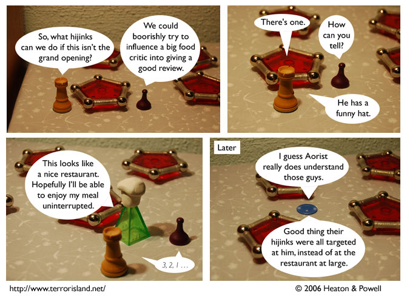

Strip #45
— Monday, September 25, 2006
Aorist gave Famous Jame’s his highest possible rating: three out of four enchiladas.
Notes, Thoughts, &c.
Ben’s Notes
Now that the “Jame’s restaurant” storyline is over, here’s a special look at the studio where I shot these strips. Note the tripod, the clip-on lights, and the odd rocks on the bookshelf. Click on the image for a larger version.

Lewis’s Notes
I am not certain I am 100% pleased with the way this strip turned out, but I can’t quite put my finger on what it is that is leaving me unsatisfied. I suppose that its possible my sense of humor isn’t perfectly in tune with logical necessity.
We’re adding an FAQ, as soon as some questions get asked frequently.
Fun fact: my building’s hot water is on the fritz today. I have decided to start liking cold showers as a result. This plan is not easy to implement.